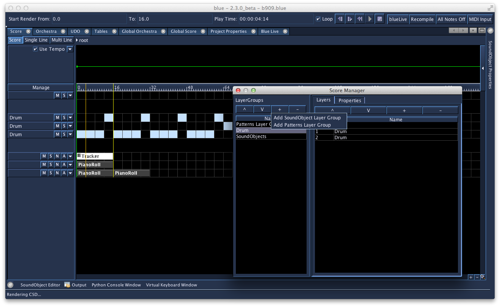
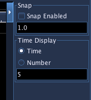

Score Timeline

Overview
The Score is the tool in Blue for working with musical material in time. It is a canvas upon which to create and organize musical ideas. The Score features a modular timeline, where each Layer Group within the Score is a module. These modules are a plug-in point that can be extended with other plug-ins. Each Layer Group in turn may be broken down into layers.
The image above shows a Score with three Layer Groups. The first two are Patterns LayerGroups, while the last is a SoundObject Layer Group. Also shown is the ScoreManager dialog (accessible from the Manage button on the left part of the Score).
Layer Groups
A Score is divided into Layer Groups. Each Layer Group has a user-interface for the main timeline area, as well as a header interface that shows on the left-hand side. The header area usually shows meta-information and controls for each of the Layer Group's layers, such as layer name, muting, soloing, and other features.
By using the Score Manager Dialog, you can add as many Layer Groups as you like, as well as many layers to each group as you like. You can also push up and down Layer Groups to reorganize them. The same add/remove/push up/push down actions are also available for Layers within a Layer Group.
Note
Add/Remove/Push Up/Push Down for layers is also available while working in the main score area by right-clicking the Layer panels on the right and selecting the options from the popup menu.
Also, all LayerGroups support having NoteProcessors used with them. Using a NoteProcessor on a LayerGroup will affect all notes generated within that LayerGroup. Editing the LayerGroup's NoteProcessors can be done by right clicking on the root Score node in the Score Bar, described below.
Regarding the design, a Layer Group is primarily responsible for generating Csound Score notes. However, they are also able to generate tables, instruments, and anything else that is usable in Csound. It is up to the developer to choose what features the Layer Group will use.
SoundObject
SoundObject Layer Groups are one of the primary Layer Group types. They support the SoundObject system in Blue for scoring them in time on the timeline. They also are the canvas on which automations are drawn.
SoundObject Layer Groups are divided into SoundLayers. Each SoundLayer can contain SoundObjects of any type as well as have automations assigned to the layer. Unlike MIDI-based studio software, where layers are bound to a single instrument or channel in a mixer, Blue's SoundLayers are free to hold SoundObjects that generate any data for any instrument. This design choice allows freedoms for you to design your project as you wish, though at the expense of being able to implement some things which may be commonly found in MIDI-based studio software.
To use the SoundObject system, first create a SoundObject Layer Group using the Score Manager Dialog. (By default, new projects in Blue start with a single SoundObject Layer Group.) Next, add as many layers as you would like to the LayerGroup. You can then edit the names of the layers using the ScoreManager Dialog, or back in the main Score area by double-clicking the area on the left of the Layer's panel on the left.
On the timeline, rt-clicking on any soundLayer will show menu options for adding different types of SoundObjects, pasting a SoundObject from the buffer if any SoundObjects in the buffer are available, as well as other commands. (Copying and pasting of SoundObjects can also be done using ctrl-c and ctrl-click on a layer.)
Once you have SoundObjects on the timeline, you can click on them to select it, or click in an empty area and drag to show a selection rectangle. You can also add and remove SoundObjects to/from the selectionn by holding shift when clicking.
Once selected, you can move selected SoundObjects by pressing the mouse down on one of the selected SoundObjects, then drag to move them in time as well as up and down layers. If you press shift down when you click, once you drag you will create clones of the original material and move them in time. If you move the mouse to the right-side of a SoundObject, the cursor will change to a resize cursor, and clicking and dragging will allow you to change the duration of the SoundObject. (Note you can only resize one SoundObject at a time.)
If you have a single SoundObject selected, you can edit the properties of the SoundObject by using the SoundObject Property Window. This window can be opened from the menu "Windows -> Sound Object Properties" or by using the shortcut "F3". From this window you can change the name of the SoundObject, its start time and subjective duration, as well as add and remove NoteProcessors (if the SoundObject supports it).
To edit a SoundObject, select a single SoundObject and open the SoundObject Editor window. You can also double-click a SoundObject, which will set the editor for the SoundObject in the Editor window as well as focus the SoundObject Editor window. (If the Editor window is docked, double-clicking the SoundObject will cause the editor to show the docked window.)
Patterns
Patterns Layer Groups are based upon the same SoundObject system as the SoundObject Layer Groups, but presents a different way to working with these objects. At a high-level, each Pattern layer has one SoundObject assigned to it. The SoundObject is the source score material for a Pattern Layer. Selecting boxes in the grid that shows for the Patter Layer determines where that score material will be used to generate notes. For music projects that rely on patterns and regular metered time, using the Pattern Layer Groups can be more efficient for creating a piece than using SoundObject Layer Groups.
The grid of time for Pattern Layers is currently hardcoded to repeat every four beats, or one measure at 4/4 time. However, a SoundObject is not constrained to generate score for only one measure. For example, you can create a PianoRoll that has a time behavior of "None", and have it last sixteen beats (four measures). Everywhere that the pattern grid is selected for the Pattern Layer that uses that SoundObject will then create that sixteen beat score and start it at the time of the grid box.
Patterns Layer Menu Options

By default, new Pattern Layers will use a GenericScore SoundObject that is set to a duration of four beats, and use a time behavior of "None". This means that the score will generate "as-is". In the layer's popup menu options, you can replace the SoundObject that is being used for the layer with one from the SoundObject buffer (i.e. copied from BlueLive or from a SoundObject Layer). Also, you can switch to a different type of SoundObject using the menu.
SoundObjects will generate accordingly to the values set in the SoundObject Properties dialog, with the exception of the start time. Blue will reassign the start time to 0 when it generates the notes for the layer. On the whole this behavior will not affect most users, but is worth noting.
To edit the SoundObject for a Pattern Layer, you can either use the popup menu option for "Edit SoundObject", or you can also click the layer panel on the left. A single click will bring up the SoundObject editor.
To edit the layer's patterns, click on a grid box to toggle between on and off for that box. You can also press down and drag along to set multiple boxes. The value that is set for the multiple boxes will depend on the action of the first box selected. For example, if the first box when the initial mouse down is on, the mouse down will turn it off, and dragging will turn off all boxes that the mouse extends through.
Audio
Audio Layer Groups provide standard Digital Audio Workstation (DAW) functionality. Users can use Audio Layers to drag-and-drop Audio files onto the timeline. Each Audio Layer maps to a channel in Blue's mixer, where effects can be added for the audio layer. Automation for effect parameters is available on the audio layer.
To use the Audio layers, first create an Audio Layer Group using the Score Manager Dialog. Next, add as many layers as you would like to the LayerGroup. You can then edit the names of the layers using the ScoreManager Dialog, or back in the main Score area by double-clicking the area on the left of the Layer's panel on the left. The name of the Audio layer will also show under its corresponding mixer channel.
To add Audio files to a layer, you can either drag and drop a file from the operating system's file mananger, or you can use the Blue File Manager to locate a file, then drag and drop it to an Audio layer.
Once an audio clip is on the timeline, you can modify its properties in a few ways. First, you can click and drag it to move it in time. If you click and drag from the left hand side, you will alter both the audio clip's start time, as well as the audio clip's file start time. For example, if a clip was added that started at time 0.0 and had an audio file start of 0.0, if you drag from the left hand side to time 3.0, both the start of the clip and audio file start will be set to 3.0. This means that 3.0 beats into the project, the audio clip will start rendering from 3.0 seconds into the file. If you drag from the right hand side, it will alter the duration of the audio clip. If you hold down alt+shift, then press within an AudioClip, you will split the AudioClip into parts. If you hold down the alt key, then press and drag the mouse, you can alter just the file start time.
If you have a single Audio clip selected, you can edit the properties of the clip by using the ScoreObject Property Window. This window can be opened from the menu "Windows -> Sound Object Properties" or by using the shortcut "F3".
Additionally, if a single Audio clip is selected, additional properties are available to edit using the ScoreObject Editor window. You can also double-click an Audio clip, which will set the editor for the clip in the Editor window as well as focus the ScoreObject Editor window. (If the Editor window is docked, double-clicking the clip will cause the editor to show the docked window.)
Audio clips support fades. Like Ardour, upon which much of the audio layer system is based, all fades are crossfades. Clips will crossfade with signals that are already in the bus, with the first clip crossfading with silence. Fade types and durations may be set within the clip's editor panel. The clip duration may be visually modified by mousing over the clip, pressing with the mouse on either the fade-in or fade-out handle that appears after mousing over the clip, then dragging and releasing to update the fade's duration. The fade type may also be modified by right clicking within a fade area and choosing the fade type using the popup menu.
For more information about Fades, please see Ardour's manual entry on Region Fades and Crossfades.
User-Interface Walkthrough
Play Bar
The play bar at the top has:
- time to start playing from
- what time to play to (if the render end time is set)
- the current play time
- Loop checkbox to have render looping from render start time to render end time
- Forward/Back buttons for jumping between markers
- Back button to start from beginning of Score
- Play/Stop buttons to start/stop rendering
- BlueLive buttons:
- BlueLive toggle button to turn on/off BlueLive
- Recompile button that will stop the current BlueLive run, recompile the project, and start BlueLive again
- All Notes Off Button to turn off any hanging notes in a BlueLive run
- MIDI Input toggle button enabled/disables Blue MIDI input into BlueLive
Score Bar
The PolyObject bar (shown above with only one PolyObject, "root") shows what PolyObject you are currently editing. if you were to add a PolyObject named "phrase 1" to the main timeline shown above, then double click that PolyObject to edit it, the PolyObject bar would have two buttons on it, one for "root", and one for "phrase 1". you would then be editing "phrase 1"'s timeline. by clicking on the "root" button of the timeline, you would then return out of the PolyObject's timeline and back in the root's timeline.
SoundLayer Editor
Below the polyObject bar on the left, you will see the soundLayer editor. here you can change the name of the soundLayer, as well as mute the layer (all soundObject's on muted layers will not be used to generate notes when creating .CSD files).
On the bottom of the soundLayer editor are four buttons, "^", "V", "+", and "-". "^" and "V" will push up or push down soundLayers. (HINT: You can move multiple soundLayers by clicking on one soundLayer, then holding down shift and clicking on the last of the soundLayers you want to move, then using the "^" and "V" buttons.) the "+" will add a soundLayer after the currently selected soundLayer. if no soundLayers are selected, then it will add one to the end of the list. the "-" button will remove any selected soundLayers. it should ask for a confirmation before removing any layers.
The Timeline
Below the polyObject bar on the right is the main time line. it shows the time line for the currently edited polyObject. The +/- buttons next to the scrollbars are used to zoom in on the time line, and those settings will be maintained between work sessions.
Tempo Editor

The tempo editor is an optional use feature that allows editing of overall tempo for a project using a line editor. This feature starts off as disabled and closed. When in this state, whatever tempo values are saved will show as dark gray line that is uneditable. To enable the use of the tempo editor, select the checkbox marked "Use Tempo". Selecting this will redraw the tempo line in green. To open up the tempo editor for a larger view and for editing, select the down arrow button next to the "Use Tempo" checkbox.
Like other line editor objects in Blue, left-clicking on an area where there is no point will insert a new point, while hovering over an existing point and pressing down, then dragging will allow moving of that point. Right-clicking a point will delete a point.
If right-clicking the tempo editor when not on a point, the following popup menu will appear:

The first option will allow editing of the values of the points entered into the line editor by use of a table with two columns: the first column being the beat on which the tempo change occurs and the right column being the tempo value that it should have. One may find using the table editor easier to use to fine-tune values.
The second option will allow changing the boundary min and max tempo values for the line editor, as well as the option for what to do for points that fall outside of the new range. The options here are "Truncate" which will set any points' values that lie outside the new range to the closest boundary value, or "Scale" which will take all point values from the old range and scale them to the new range.
Use of the tempo editor is completely optional and users familiar with Csound's t-statement for controlling global tempo may opt to disable using Blue's tempo editor and to use a t-statement in the global orc section of the globals tab. Also, older Blue projects that existed from before Blue's tempo editor was developed can count on their projects loading and running correctly even if opened with versions of Blue that do have a tempo editor, due to Blue's default to disable the Blue tempo editor. Regardless of which tempo system is chosen by the user, one should be careful not to use both at the same time as this will cause two t-statements to exist in the generated CSD (the hand-entered one and the one generated by Blue), causing unexpected performance results.
Quick Time Dialog

While in the main timeline area, pressing ctrl-t when a soundObject is selected will bring up the quick time dialog. Here you can edit the start time and duration of the currently selected soundObject. When the dialog is first popped up the start time field is automatically focused for editing. You can press tab to switch between the two fields. Pressing enter will update the properties. Pressing escape, closing the dialog, or clicking anywhere outside of the dialog will cancel any changes and close the dialog.
Score Time Properties

In the upper right of the Score window is an arrow button; pressing this reveals the time properties for the Score. The two options here are Snap and Time Display. Snap provides a grid by which to line up your SoundObjects. Snap is measured in beats. Time Display allows setting how the time bar shows numbers, i.e. every 4 beats, rendered as a number or as a time value.
Shortcuts for SoundObject Layer Groups
| Shortcuts | Description |
|---|---|
| ctrl-c | copy selected soundObject(s) |
| ctrl-x | cut selected soundObject(s) |
| ctrl-click | paste soundObject(s) from buffer where clicked |
| shift-click | paste soundObject(s) from buffer as a PolyObject where clicked |
| shift-click | when selecting soundObjects, adds soundObject to selected if not currently selected and vice-versa |
| double-click | if selecting on timeline, select all soundObjects on layer where mouse clicked |
| ctrl-d | duplicate selected SoundObjects and place immediately after the originals |
| ctrl-r | repeat selected SoundObjects by copying and placing one after the other n number of times where n is a number value entered by the user (user is prompted with a dialog to enter number of times to repeat) |
| ctrl-drag | if ctrl is held down when drag is initiated of selected SoundObjects, a copy of the originals is made and left at their original times |
| ctrl-t | show quick time dialog of selected soundObject |
| 1 | switch to Score mode |
| 2 | switch to Single Line mode |
| 3 | switch to Multi Line mode |
| space | Start/stop rendering of project |
| space | |
| G | Scroll score view to location of render start time (green line) |
| Y | Scroll score view to location of render end time (yellow line) |
| Alt-S | Toggle Snap |
| [ | Set render start time to previous marker (or beginning of project) and scroll view to new time |
| ] | Set render start time to next marker (or end of project) and scroll view to new time |